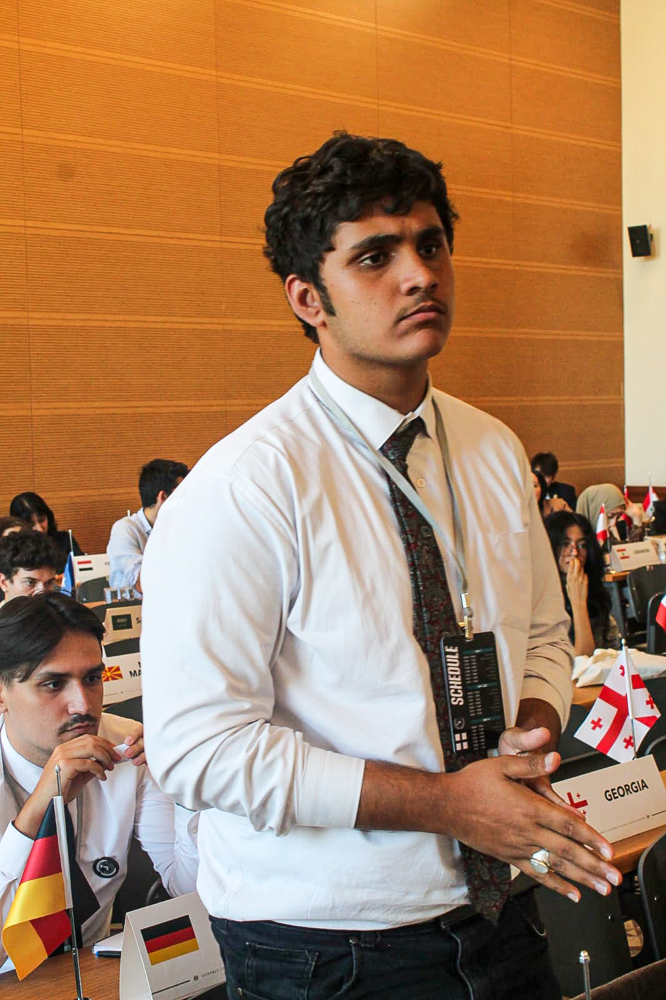

<section id="sg-letter">
	<div class="row g-0 text-center">
        <div class="col-md-3 col-sm-2 m-0 p-0" style="background-color: #000000;">
            
        </div>
        <div class="col-md-9 col-sm-10 m-0 p-0 right-side">
            <p class="pd">
                Dear Participants,
                <br><br>
                I am delighted to invite you to join Diplomacia MUN Workshop. As the Secretary-General of this conference, I'm thrilled to introduce you to an exceptional opportunity for learning and forging meaningful connections within the MUN community.
                <br><br>
                Diplomacia is not just another conference, it is an experience meticulously crafted to equip you with the tools, insights, and abilities needed to excel as a delegate. We wholeheartedly value your time, which is why we've assembled a teaching panel consisting of only highly experienced and distinguished individuals from Istanbul's MUN community. They'll guide you not only through MUN-specific modules like procedures and resolution drafting, but also universally applicable skills such as public speaking and lobbying.
                <br><br>
                Our focus extends beyond just teaching you as we provide opportunities for you to flex your problem-solving skills through mock MUN sessions in which you will engage in a GA-3 SOCHUM committee. Our agenda item is “Cultural Preservation and Sustainable Tourism” which provides the framework for you to put the principles learnt from the modules into practice.
                <br><br>
                We've intentionally restricted the workshop's capacity to create a setting where you can engage deeply with both teachers and fellow participants. Our aim is not merely to fill seats, but to orchestrate an experience that will resonate with you long after the workshop concludes.
                <br><br>
                Our organisation teams have been working day and night to arrange an experience that is worth your time and effort. On behalf of all of them, I extend a warm and sincere welcome to you. We're eagerly anticipating this journey of growth and learning that we're embarking upon together. The strides you're bound to make are nothing short of remarkable, and we're excited to bear witness to them.
                <br><br>
                Warm regards,
                <br><br>
                Syed Muhammad Ammar Jafri
                <br>
                Secretary-General
            </p>
        </div>
    </div>
</section>